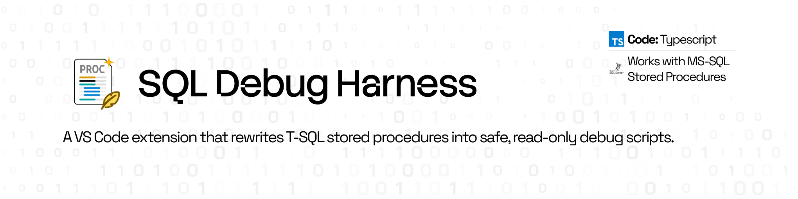

User Documentation
SQL Debug Harness

A VS Code extension that rewrites T-SQL stored procedures into safe, read-only debug scripts — so you can see what a procedure would do before you ever risk running it for real.
Overview
Stored procedures are hard to reason about from a script diff alone. You can read a
CREATE PROCEDURE statement top to bottom and still not be
fully certain which rows an UPDATE will touch, or what a
nested transaction will actually commit, until it's already run.
SQL Debug Harness statically rewrites a T-SQL stored procedure so that every statement with side effects becomes a read-only preview — runnable against a real connection, including production-adjacent ones, without writing anything. The engine is TypeScript and runs in-process; no Python required.
Problem Statement
Reviewing or testing an unfamiliar stored procedure today usually means one of a few uncomfortable options: manually comment out the DML and hope you caught every statement, wrap the whole thing in a transaction and remember to roll it back, or just not test it locally and find out in staging. None of these scale well, and all of them rely on the reviewer not making a mistake under time pressure.
SQL Debug Harness removes the manual step — the rewrite is generated automatically, consistently, and the same way every time.
How it works
Generating a debug script is a five-step pipeline, run entirely in-process inside the extension (hybrid AST + text scan):
Prepare
Strip GO batches and deploy preamble; convert
CREATE PROCEDURE parameters into
DECLAREs with TODO placeholders.
Detect
Every INSERT,
UPDATE,
DELETE, and TCL statement is identified, along with
constructs the tool can't safely handle.
Rewrite
DML becomes equivalent SELECT previews. TCL is
neutralized so nothing can commit. Named EXEC
calls become PRINT stubs.
Trace
Declared variables get PRINT /
RAISERROR traces at meaningful points.
Output
You get a rewritten script plus an Analyze panel summarizing what changed and flagging anything the tool couldn't confidently rewrite.
Beta status & limitations
beta release
The rewrite logic is covered by fixture tests, but treat generated output as a strong starting point — sanity-check it against your own procedures before trusting it on anything sensitive.
Not a live debugger. No breakpoints, no step-into, no live DB
connection. Dynamic SQL, cursors, WHILE,
MERGE, and OUTPUT are flagged
rather than silently mishandled. T-SQL only for v1.
Install & quick start
Requires VS Code ^1.85. No Python or PyPI package — installing the extension is the entire setup.
From source (VSIX)
git clone https://github.com/DeeprajDeveloper/vscode-sql-debug-harness.git
cd vscode-sql-debug-harness
npm install && npm run compile && npm run package
code --install-extension dist/sql-debug-harness.vsix
Open samples/fixtures/simple_dml.sql, then right-click →
SQL Debug Harness → Generate Debug Script.
Optional CLI
npx sql-debug-harness generate -i MyProc.sql -o MyProc_debug.sql
npx sql-debug-harness analyze -i MyProc.sqlUsage
Commands live under the SQL Debug Harness submenu, activity-bar Workbench, and Command Palette.
SQL Debug Harness ▸
Open Workbench
Generate Debug Script
Analyze Procedure
─────────────────────
Configure Settings
Open Extension Settings
In the Workbench: Select File… or Load Active, then
Analyze / Generate. Save analysis .txt, debug
.sql, and step log individually.
VSCode Settings
| Setting | Default | Description |
|---|---|---|
spDebug.traceStyle |
print |
print or raiserror |
spDebug.logToOutput |
true |
Step log in the Output channel |
spDebug.saveLogFile |
false |
Also write <proc>.log beside source |
spDebug.quietWhenLogging |
true |
Avoid duplicating progress lines |